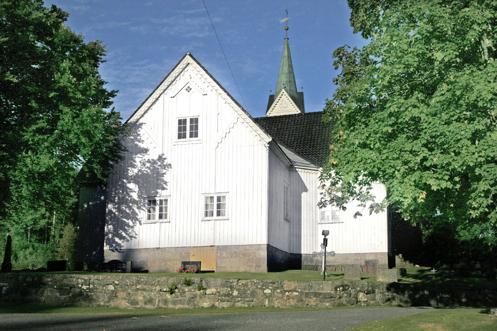
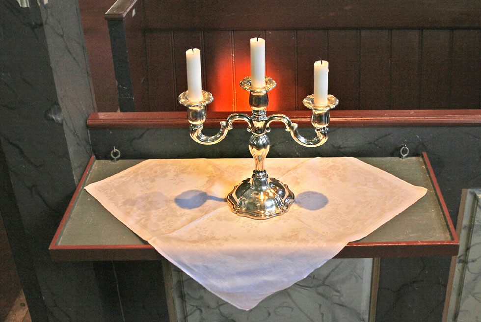
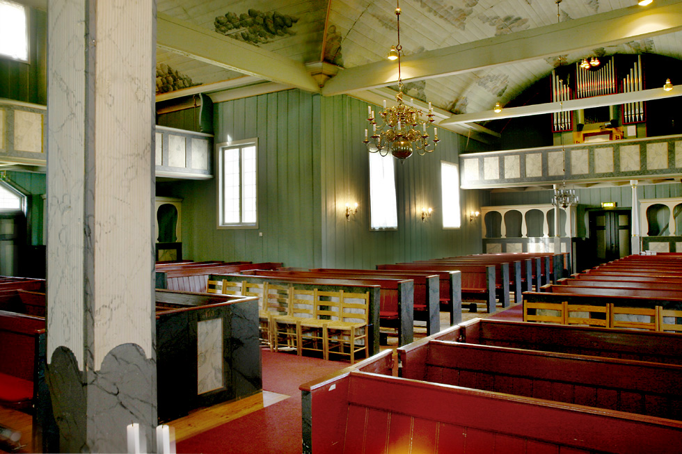
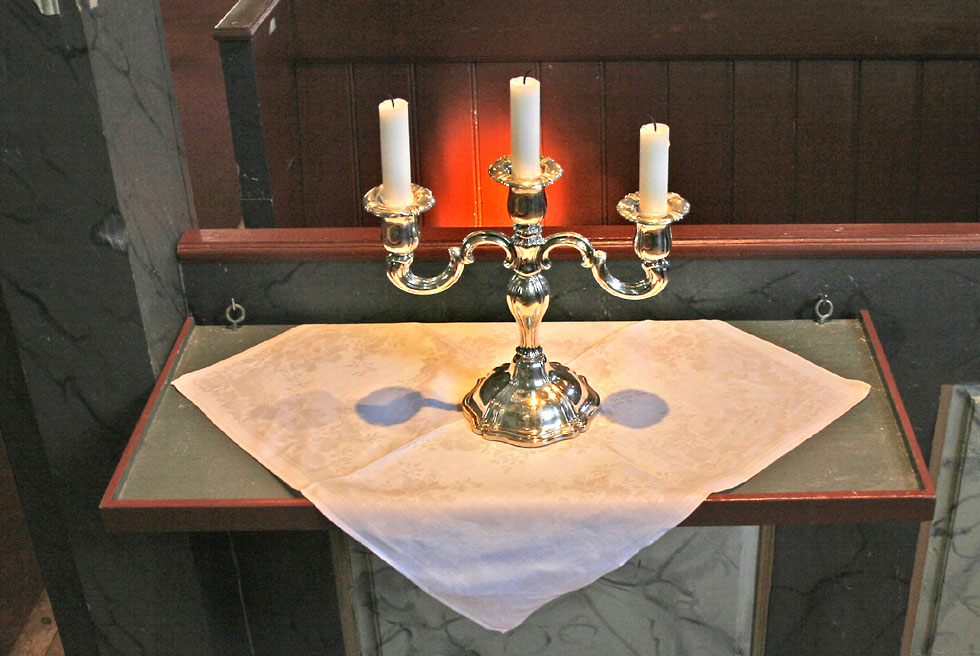
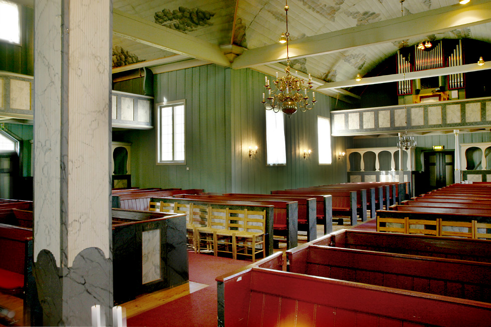
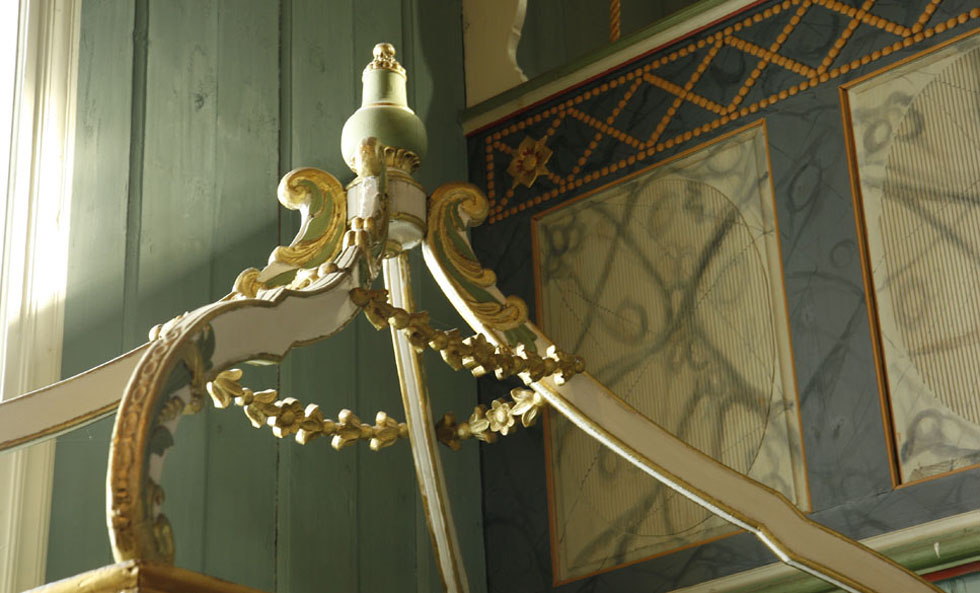
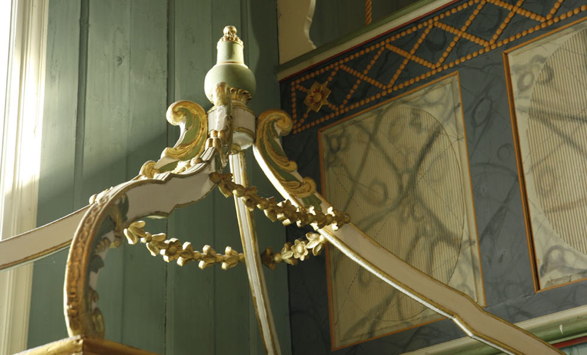
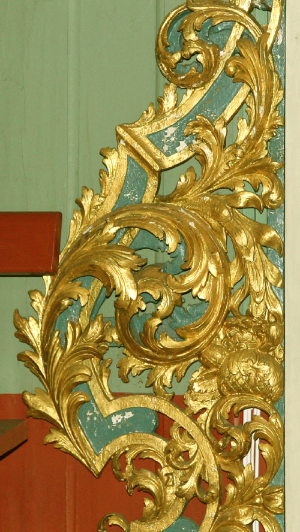
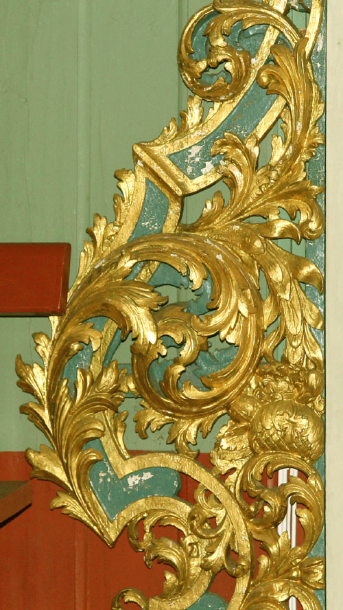

Vegårshei kirke
Foto: Torvald Slettebø, Universitetet i Agder, Seniorsenteret (2007)
Tekst: Bjarne Karsten Nenseter
Vegardshei kirke - På Kirkevandring i Aust-Agder
Vegårdhei er en vidstrakt bygd med utpreget heinatur og mange småvann. I dagligtale kalles den ofte bare Heia. Vegårshei kirke er nevnt allerede på 1400-tallet. Og i et brev fra 1505 kalles den «Molands Kierche a Wigardsheidha».
I 1667 ble der bygd ny kirke på Vegårshei. I 1723 kjøpte almuen kirken, og i de nærmeste 40-50 år ble der gjort store påkostninger. Men til tross for dette, så klager prost Johan Aas i sin bok om Gjerstad, over at kirken omkring 1800 var i dårlig stand. Det ble derfor bestemt å bygge ny kirke. Det var i presten Søren Georg Abel's tid. John Aas sier om Abel: «Han havde megen Fortjeneste af at den nye Kirke kom istand, og han var den, der drev Sagen fra Først til Sidst». Ved synfaring av gamlekirken, fant en at den «befandtes forraadnet og utienlig til Ombyggelse».
Omkostningene til ny kirke ble utlignet på «Sognets gaardbrugene Mand». Abel tegnet seg selv for største bidrag. Byggingen ble bortsatt til Knud Skjerkholt fra Holt. John Aas skriver om dette i ovennevnte bok: «Endskjønt denne Mand var fullkommen ukyndig i den kunst at bygge Kirker, og endskjønt der var hverken oprids elller Overslag over Bekostningen, og endskjønt Mesteren kom 88 Rdlr. tilkort paa Accorden, såa der maate skje Efterskud, såa kom dog en velbygget, smuk Kirke i stand, der ble høitidelig indviet 19.8.1810.» Prost Krogh i Arendal foretok innvielsen på biskopens vegne.
Vegårshei kirke kunne med rette betegnes som en smuk kirke. Den ble reist i bindingsverk som korskirke. Interiøret var preget av Louis Seize-stilen. Prekestolen sto over alteret. På korbjelken står denne innskriften: Bygget af Knud Torkildsen Skjerkholt 1808. Malet av Lars Berg 1820.I 1902 gjennomgikk kirken en hardhendt ominnredning. Den ble panelt innvendig og fikk nytt golv og nye benker.
Alt i 1932 ble det spørsmål om å få tilbake det gamle interiøret. Restaureringskonsulent Finn Krafft la frem planer for restaurering. I 1950 ble det vedtatt å sette arbeidet i gang.
Til 150-års jubileet i 1960 ble himlingen avdekket og fargerestaurert og den vakre takmalingen fra 1820-årene kom frem igjen. Kirken fikk igjen sitt opprinnelige interiør med Louis Seize-mønster med girlanderornament på den halvrunde prekestolen over alteret. Alteret har antemensaledekor, og både det og døpefonten er fra 1600-tallet. Alterbilde med motiv fra kampen i Getsemane, er malt av Christian August Lorentzen og er fra 1806. Under galleriene er det gamle maleri av profeter. Klokkene er fra 1761 og 1825.
Tårnet sto midt på kirken, men ble i 1863 flyttet til vestre korsarm. Vegårshei kirke har vært lovekirke eller gavekirke som det ble ofret gaver til av folk som var i livsfare eller havsnød. Den siste gave kirken har kvittert for, er fra Henrich Carstensen i Risør, han var i livsfare i Jammerbukt og lovet da 30 rdlr.
Vegårshei kirke ble en vakker og særpreget kirke da den fikk igjen interiøret fra 1810. Finn Krafft skriver om dette: «Det har vært fyllt med vårens og sommerens lette farger. Korpartiet med altertavle, prekestolen over altertavlen og ornamenter har lyst som en vakker blomsterbukett omkring det fine, følsomt malte alterbilde - Kristus i Getsemane. Og for et interiør det har vært! Og hvor greit ligger ikke alt til rette for en tilbakeføring, en sann restaurering. Under den lyse gråblå hvelvhimmel med sine lette skyer, sin fine grå og grønne gesims er veggenes varme grønnliggrå farge. Og så korveggenes praktfulle oppbygning. Prekestolen som står over alterbordet og maleriet i lyst og grått, marmorert og med et friskt rødt felt midt på. Forøvrig er det blått bl.a. på korgalleriets ramtrær, videre litt grønt og meget gull på de rike skjæringer.»
Til 150-års jubileet i 1960 skriver Gunnar Grasåsen: «Gjennom 150 år har unge og gamle gått inn og ut i denne kyrkja. Hit kom dei både i glede og sorg, og her henta dei styrke og hjelp til livsens strid. Måtte også komande ætter vere å finne på kyrkjeveg når klokkene kallar.”
 



 

 
